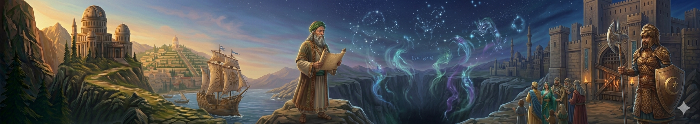
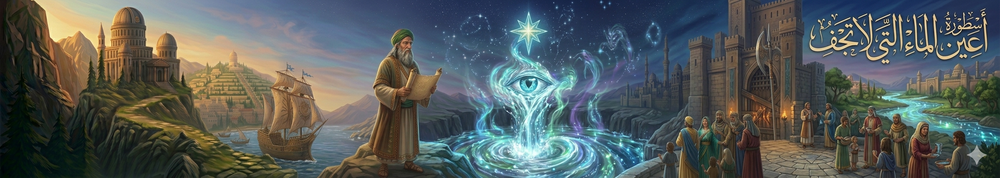
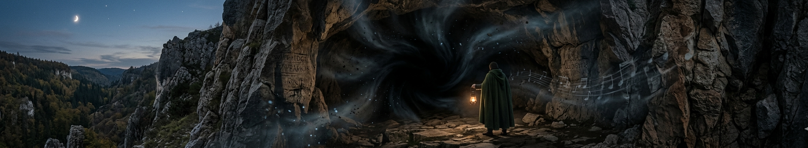

"في كل حكاية.. فلسطين"

أسطورة وادي الجن
يُحكى أن في أطراف جنين واديًا عميقًا كان الناس يتجنبونه بعد الغروب. كانوا يقولون إن أصواتًا تُسمع فيه تشبه الهمسات والضحكات البعيدة، وإن أضواء صغيرة تتحرك بين الأشجار ثم تختفي فجأة. لذلك سموه “وادي الجن”، واعتقدوا أن كائنات خفية تسكنه وتحرس أسراره.

أسطورة عين الماء التي لا تجف
في إحدى القرى القريبة من جنين، كان هناك نبع ماء لا ينقطع أبدًا حتى في أشد فصول الصيف. ويُقال إن ملاكًا مرّ بالمكان قديمًا ولمس الماء، فباركه وجعله دائم الجريان. وكان الناس يعتقدون أن من يشرب منه بقلب طيب يشعر بالراحة والشفاء، أما من يأتي بقلب سيئ فلا يرتوي أبدًا.

أسطورة الكهف الذي يبتلع الصوت
في أحد جبال جنين، يوجد كهف عميق يُقال إن أي صوت يدخل إليه لا يخرج كما هو. كان الناس يرمون حجارة داخله فلا يسمعون ارتدادها، وكأن الكهف يبتلع كل شيء. لذلك اعتقد البعض أن الكهف بوابة إلى عالم آخر أو أنه مسكون بأرواح قديمة.